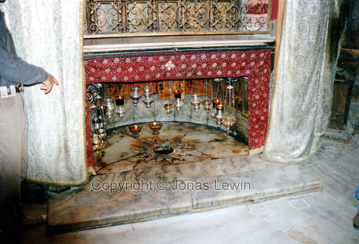

These people live in the middle of their
religion, so not starting with this subject would be a crime in itself.
As you all know Jerusalem is the cornerstone of a few different religions.
Regardless of which one of them you believe in, you want the other ones
gone. Since they are human, they are reluctant to accept anything that is
different. To do that you have to learn how to do that, and some people are
not willing to do this. So if something is different or strange, we tend to
try to dispose of these elements, so that we can live in peace and unity. I
don't disagree with this, but it has to be kept to a certain level, and some
people have crossed the line in the worst possible way. It could be easy for
us to say, why don't they just live together. Then I ask you, don't you know
any one that is a racist? Your first task should then be to change that
person, since he/she is a lot closer to you, compared to the people in
Israel. Se how easy that is, and then imagine that some of the people that
you first wanted to change can be ten times more difficult to change. Are
you up to the task?
"Before you judge someone - stop and remember; we all see the same sun" -
Masterboy
They
say that this is the birthplace of Jesus. I'm not so sure that I believe
this...
Jerusalem is a beautiful old city with it's culture and religion well
preserved. Just because the city is dirty, doesn't mean that is can't be
beautiful. And since there's a constant stream of tourists, the society has
changed to be able to handle the tourists. Lots of sales people, wanting to
sell "junk" to you for prices you never imagined; you've never seen so many
figures on a price tag before. Exactly the opposite of Thailand, where you
can buy everything you feel like. But the sales people are just as good as
the ones in Thailand, so they always find one or two "victims" in the crowd
to sell their things to. A word of advice - don't have eye-contact with
anyone of them, or you'll never get rid of them.
I was at the place where Jesus was born, crucified, and the street he walked
up to his crucifixion. I'm not convinced that these where the actual sites,
but to me this was as good as any. The real place of Jesus birth should not
be just another tourist attraction. It's too sacred to have as a tourist
place to me. I don't think that I'm the only one, thinking like this. But
what do know for sure is the real one, is the western wall I got the
opportunity to go and touch the wall. This was almost as exciting then, as
when I went and touched the outside wall of the forbidden city in Beijing.
The western wall was filled with small notes, of peoples wishes. They where
not allowed to remove any notes. Also no appliances to get the note to stick
where allowed, so the only way was to fold their note, and try to press it
down between some other notes. If you where lucky, you could press your note
down one of the cracks in the wall.

Underneath
the floor that I am standing on, is a floor that was used over 1000
years ago.
I also went to the Rock Mosque in Jerusalem. You have seen it on pictures,
but you never realize how big it is until you are inside it. Well worth a
visit. And as always you are covered with religion once you enter. If you
get lucky, you can actually see the monks.
Let's
have a guessing contest where I am right now? Valley of the communities
would come really close.
 The
tree of Oskar Schindler. Look closely on the name tag at the bottom, and
you can see that it actually says Oskar Schindler.
The
tree of Oskar Schindler. Look closely on the name tag at the bottom, and
you can see that it actually says Oskar Schindler.
A
2000 year old street, and I'm actually standing on it.
The
Western Wall. One of the most famous walls in the world. You pray here,
and try to insert small notes of your wishes into the wall, without
removing the other peoples notes. This way your wish may come true.
I didn't try to insert any note for 2 reasons. I had nothing right then
to wish for that I could think of, and I didn't feel accidentally
removing the wish of one person.
The day in Jerusalem was very interesting, and exciting. The day after I was
there, I read in the paper that one man had shot 7 other people in a street,
not too far from us. We had not noticed anything, so it might have happened
after we left.
 This
picture is an actual live web cam of the Western Wall. If the picture
doesn't update, then you can click
here to see the
correct page.
This
picture is an actual live web cam of the Western Wall. If the picture
doesn't update, then you can click
here to see the
correct page.